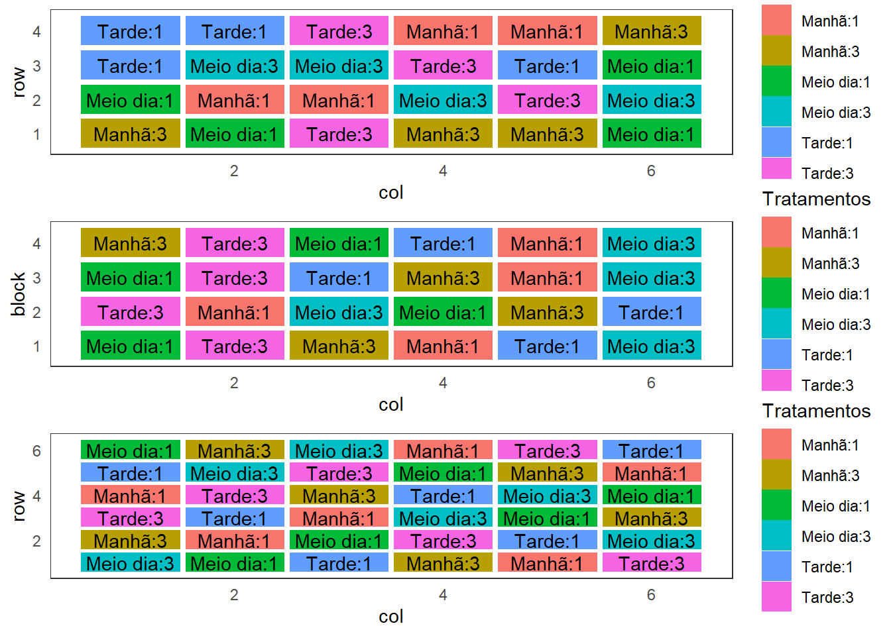

Esquema fatorial de tratamentos
Fundamentos
Exemplo 1: Avaliação do efeito da adubação NPK sobre uma determinada cultura
\[\left.\begin{array}{l} \mbox{N com 2 níveis}\\ \nonumber \mbox{P com 2 níveis}\\ \nonumber \mbox{K com 2 níveis} \nonumber \end{array} \right\} = 2\times 2 \times 2 = 2^3 = \mbox{8 tratamentos}\]
Lê-se: fatorial dois por dois por dois ou fatorial dois ao cubo.
Tratamentos:
- \(N_0P_0K_0\)
- \(N_0P_0K_1\)
- \(N_0P_1K_0\)
- \(N_0P_1K_1\)
- \(N_1P_0K_0\)
- \(N_1P_0K_1\)
- \(N_1P_1K_0\)
- \(N_1P_1K_1\)
Exemplo 2: Avaliação da Temperatura e da Umidade sobre o tempo de consevação de um produto.

\[3 \times 2 = \mbox{6 tratamentos}\]
Lê-se: fatorial três por dois.
| Temperatura | \(U_1\) | \(U_2\) |
|---|---|---|
| \(T_1\) | \(T_1U_1\) | \(T_1U_2\) |
| \(T_2\) | \(T_2U_1\) | \(T_2U_2\) |
| \(T_3\) | \(T_3U_1\) | \(T_3U_2\) |
Planejamento e croqui
O planejamento pode seguir qualquer um dos delineamentos vistos anteriormente:

Vantagens e Desvantagens dos esquemas fatoriais de tratamentos
Vantagens : Permitem estudar os efeitos simples e principais dos fatores, bem como o efeito da interação envolvendo os mesmos.
Desvantagens : O número de tratamentos pode ser elevado devido ao número de fatores e/ou ao número de níveis dos fatores.
Exemplos:
- \(2\times 2 = 2^2 \Rightarrow\) 4 tratamentos
- \(3\times 3 = 3^2 \Rightarrow\) 9 tratamentos
- \(5\times 4 \Rightarrow\) 20 tratamentos
- \(4\times 3 \times 3 \Rightarrow\) 36 tratamentos
Análise dos dados
Modelo estatístico
\[y_{ikj} = \mu + \alpha_i + \gamma_k + (\alpha\gamma)_{ik} + e_{ikj},\]
em que:
\(y_{ikj}\) é o valor observado no \(i\)-ésimo nível do fator \(A\) e \(k\)-ésimo nível do fator \(B\) na \(j\)-ésima repetição;
\(\mu\) é uma constante, comum a todas as observações;
\(\alpha_i\) é o efeito do \(i-\)ésimo nível do fator \(A\);
\(\gamma_k\) é o efeito do \(k-\)ésimo nível do fator \(B\);
\((\alpha\gamma)_{ik}\) é o efeito da interação entre entre o \(i-\)ésimo nível do fator \(A\) e o \(k-\)ésimo nível do fator \(B\)
\(e_{ikj}\) é o efeito do acaso.
Estimadores dos parâmetros pelo método dos mínimos quadrados}
Dado o modelo
\[y_{ikj} = \mu + \alpha_i + \gamma_k + (\alpha\gamma)_{ik} + e_{ikj},\]
as restrições usuais são:
\[\sum_{i=1}^{a}\hat{\alpha}_i = 0\] \[\sum_{k=1}^{b}\hat{\gamma}_k = 0\] \[\sum_{i=1}^{a}\hat{(\alpha\gamma)}_{ik} = \sum_{k=1}^{b}\hat{(\alpha\gamma)}_{ik} = \sum_{i=1}^{a}\sum_{k=1}^{b}\hat{(\alpha\gamma)}_{ik} = 0\]
As soluções de mínimos quadrados, considerando-se as restrições, são:
\[\hat{\mu} = \bar{Y},\] \[\hat{\alpha}_i = \bar{Y}_i - \bar{Y},\] \[\hat{\gamma}_k = \bar{Y}_k - \bar{Y} \text{ e }\] \[\hat{(\alpha\gamma)}_{ik} = \bar{Y}_{ik} - \bar{Y}_i - \bar{Y}_k + \bar{Y}.\]
Quadro da ANOVA
| Fontes de variação | graus de liberdade |
|---|---|
| Tratamentos | \(ab-1\) |
| Resíduo | \(ab(r-1)\) |
| Total | \(abr - 1\) |
| Fontes de variação | graus de liberdade |
|---|---|
| Fator \(A\) | \(a-1\) |
| Fator \(B\) | \(b-1\) |
| Interação \(A\# B\) | \((a-1)(b-1)\) |
| (Tratamentos) | \((ab-1)\) |
| Resíduo | \(ab(r-1)\) |
| Total | \(abr - 1\) |
Hipóteses:
\[H_0: \text{Não há efeito da interação}\] \[H_1: \text{Há efeito da interação.}\]
Observações:
Quando o efeito da interação for significativo não se devem olhar os efeitos principais, mas sim os efeitos simples, ou seja, avaliar o efeito do fator A dentro de cada nível do fator B e/ou o efeito do fator B dentro de cada nível do fator A.
Hipóteses:
\[H_0: \mu_{A_1} = \mu_{A_2} = \ldots= \mu_{A_a} = \mu\] \[H_1: \text{Pelo menos duas médias diferem entre si.}\]
\[H_0: \mu_{B_1} = \mu_{B_2} = \ldots= \mu_{B_b} = \mu\] \[H_1: \text{Pelo menos duas médias diferem entre si.}\]
Efeito de \(B\) dentro de cada nível de \(A\) (\(A + B[A]\))
Efeito de \(A\) dentro de cada nível de \(B\) (\(B + A[B]\))
Exemplo - Fatorial 2X2
Tabela1: Peso de plantas cultivadas segundo o tratamento
| x | \(I_0C_0\) | \(I_0C_1\) | \(I_1C_0\) | \(I_1C_1\) |
|---|---|---|---|---|
| - | 25 | 35 | 41 | 60 |
| - | 32 | 28 | 35 | 67 |
| - | 27 | 33 | 38 | 59 |
| Totais | 84 | 96 | 114 | 186 |
Quadro auxiliar de totais dos níveis dos fatores
| - | \(C_0\) | \(C_1\) | Totais |
|---|---|---|---|
| \(I_0\) | 84\(^{(3)}\) | 96\(^{(3)}\) | 180\(^{(6)}\) |
| \(I_1\) | 114\(^{(3)}\) | 186\(^{(3)}\) | 300\(^{(6)}\) |
| Totais | 198\(^{(6)}\) | 282\(^{(6)}\) | 480\(^{(12)}\) |
Fonte: Vieira, Sônia (2006)
Quadro auxiliar de médias dos níveis dos fatores
| - | \(C_0\) | \(C_1\) | Médias |
|---|---|---|---|
| \(I_0\) | 28 | 32 | 30 |
| \(I_1\) | 38 | 62 | 50 |
| Médias | 33 | 47 | 40 |
Fonte: Vieira, Sônia (2006)
Soma de quadrados do Total
\[\displaystyle{SQ_{\text{Total}} = \sum_i\sum_k\sum_j y_{ikj}^2 - \frac{(\sum_i\sum_k\sum_j y_{ikj})^2}{abr}}\]
\[SQ_{\text{Total}} = 25^2 + 32^2 + 27^2 + \ldots + 59^2 - \frac{480^2}{12} = 2196\]
Soma de quadrados de Irrigação
\[\displaystyle{SQ_{\text{Irrigação}} = \frac{1}{br} \sum_i y_{i\cdot\cdot}^2 - \frac{y_{\cdot\cdot\cdot}^2}{abr}}\]
\[SQ_{\text{Irrigação}} = \frac{1}{6}({180}^2 + {300}^2) - \frac{{480}^2}{12} = 1200\]
Soma de quadrados de Calagem
\[\displaystyle{SQ_{\text{Calagem}} = \frac{1}{ar} \sum_k y_{\cdot k\cdot}^2 - \frac{y_{\cdot\cdot\cdot}^2}{abr}}\]
\[SQ_{\text{Calagem}} = \frac{1}{6}({198}^2 + {282}^2) - \frac{{480}^2}{12} = 588\]
Soma de quadrados da combinação Irrigação,Calagem (Tratamentos)
\[\displaystyle{SQ_{\text{I,C}} = \frac{1}{r} \sum_i\sum_k y_{ik\cdot}^2 - \frac{y_{\cdot\cdot\cdot}^2}{abr}}\]
\[SQ_{\text{I,C}} = \frac{1}{3}({84}^2 + {96}^2 + {114}^2 + {186}^2) - \frac{{480}^2}{12} = 2088\]
Soma de quadrados da Interação Irrigação\(\#\)Calagem
\[\displaystyle{SQ_{\text{I\# C}} = SQ_{\text{I,C}} - SQ_{\text{I}} - SQ_{\text{C}}}\]
\[SQ_{\text{I\#C}} = 2088 - 1200 - 588 = 300\]
Hipóteses
\[H_0: \text{Não há efeito da interação} \] \[H_1: \text{Há efeito da interação}\]
Quadro da ANOVA
| Fontes de variação | gl | SQ | QM | Fcal |
|---|---|---|---|---|
| Irrigação | 1 | 1200 | 1200 | 88,89 |
| Calagem | 1 | 588 | 588 | 43,56 |
| Interação | 1 | 300 | 300 | 22,22 |
| Resíduo | 8 | 108 | 13,5 |
\[F_{\text{tab}(5\%,1,8)} = 5,32\]
Distribuição F
Como \(\displaystyle{F = \frac{300}{13,5} = 22,22 > 5,32 = F_{tab}}\), ao nível de 5% de significância, rejeita-se \(H_0\). Logo, há evidências para afirmar que há efeito da interação entre Irrigação e Calagem, não sendo os mesmos independentes.
Efeito de Irrigação dentro de cada nível de Calagem
\[SQ_{\text{Irrigação dentro de $C_0$}} = \frac{1}{r}\sum_i y_{i1\cdot}^2 - \frac{y_{\cdot 1 \cdot}^2}{ar}\]
\[{SQ_{\text{Irrigação dentro de $C_0$}} = \frac{1}{3}(84^2 + 114^2) - \frac{198^2}{6} = 150}\]
\[SQ_{\text{Irrigação dentro de $C_1$}} = \frac{1}{r}\sum_i y_{i2\cdot}^2 - \frac{y_{\cdot 2 \cdot}^2}{ar}\]
\[{blue}{SQ_{\text{Irrigação dentro de $C_1$}} = \frac{1}{3}(96^2 + 186^2) - \frac{282^2}{6} = 1350}\]
| Fontes de variação | gl | SQ | QM | F |
|---|---|---|---|---|
| Calagem | 1 | 588 | ||
| Irrigação dentro de \(C_0\) | 1 | 150 | 150 | 11,11 |
| Irrigação dentro de \(C_1\) | 1 | 1350 | 1350 | 100,00 |
| Resíduo | 8 | 108 | 13,5 |
\[H_0: \mu_{I_0C_0} = \mu_{I_1C_0}\]
\[H_a: \mu_{I_0C_0} \neq \mu_{I_1C_0}\]
\[H_0: \mu_{I_0C_1} = \mu_{I_1C_1}\] \[H_a: \mu_{I_0C_1} \neq \mu_{I_1C_1}\]
\[F_{\text{tab}(5\%,1,8)} = 5,32\]
\[H_0: \mu_{I_0C_0} = \mu_{I_1C_0}\] \[H_a: \mu_{I_0C_0} \neq \mu_{I_1C_0}\]
| Fontes de variação | gl | SQ | QM | F |
|---|---|---|---|---|
| Calagem | 1 | 588 | ||
| Irrigação dentro de \(C_0\) | 1 | 150 | 150 | 11,11 |
| Irrigação dentro de \(C_1\) | 1 | 1350 | 1350 | 100,00 |
| Resíduo | 8 | 108 | 13,5 |
\[F_{\text{tab}(5\%,1,8)} = 5,32\]
Como \(\displaystyle{F = \frac{150}{13,5} = 11,11 > 5,32 = F_{tab}}\), ao nível de 5% de significância rejeita-se \(H_0\). Assim as médias de peso de plantas na ausência e na presença de irrigação são diferentes, quando avaliadas na ausência de Calcário.
\[H_0: \mu_{I_0C_1} = \mu_{I_1C_1}\] \ \[H_a: \mu_{I_0C_1} \neq \mu_{I_1C_1}\]
Como \(\displaystyle{F = \frac{1350}{13,5} = 100,00 > 5,32 = F_{tab}}\), ao nível de 5% de significância rejeita-se \(H_0\). Assim as médias de peso de plantas na ausência e na presença de irrigação são diferentes, quando avaliadas na presença de Calcário.
Efeito de Calagem dentro de cada nível de Irrigação
\[SQ_{\text{Calagem dentro de $I_0$}} = \frac{1}{r}\sum_k y_{1k\cdot}^2 - \frac{y_{1 \cdot\cdot}^2}{br}\]
\[{SQ_{\text{Calagem dentro de $I_0$}} = \frac{1}{3}(84^2 + 96^2) - \frac{180^2}{6} = 24}\]
\[SQ_{\text{Calagem dentro de $I_1$}} = \frac{1}{r}\sum_k y_{2k\cdot}^2 - \frac{y_{2 \cdot\cdot}^2}{br}\]
\[{blue}{SQ_{\text{Calagem dentro de $I_1$}} = \frac{1}{3}(114^2 + 186^2) - \frac{300^2}{6} = 864}\]
\[H_0: \mu_{I_0C_0} = \mu_{I_0C_1}\] \[H_a: \mu_{I_0C_0} \neq \mu_{I_0C_1}\]
| Fontes de variação | gl | SQ | QM | F |
|---|---|---|---|---|
| Irrigação | 1 | 1200 | ||
| Calagem dentro de \(I_0\) | 1 | 24 | 24 | 1,78 |
| Calagem dentro de \(I_1\) | 1 | 864 | 864 | 64,00 |
| Resíduo | 8 | 108 | 13,5 |
\[F_{\text{tab}(5\%,1,8)} = 5,32\]
Como \({F = \frac{24}{13,5} = 1,78 < 5,32 = F_{tab}}\), ao nível de 5% de significância não se rejeita \(H_0\). Assim as médias de peso de plantas na ausência e na presença de calcário não são diferentes, quando avaliadas na ausência de Irrigação.
\[H_0: \mu_{I_1C_0} = \mu_{I_1C_1}\] \ \[H_a: \mu_{I_1C_0} \neq \mu_{I_1C_1}\]
\[F_{\text{tab}(5\%,1,8)} = 5,32\]
Como \({F = \frac{864}{13,5} = 64,00 > 5,32 = F_{tab}}\), ao nível de 5% de significância rejeita-se \(H_0\). Assim as médias de peso de plantas na ausência e na presença de calcário são diferentes, quando avaliadas na presença de Irrigação.
| - | \(C_0\) | \(C_1\) |
|---|---|---|
| \(I_0\) | 28 a B | 32 a B |
| \(I_1\) | 38 b A | 62 a A |
Letras minúsculas representam a comparação das médias de Calagem dentro de cada nível de Irrigação e letras maiúsculas representam a comparação das médias de Irrigação dentro de cada nível de Calagem.
Atividades
Faça o upload da resulução e tire suas aqui